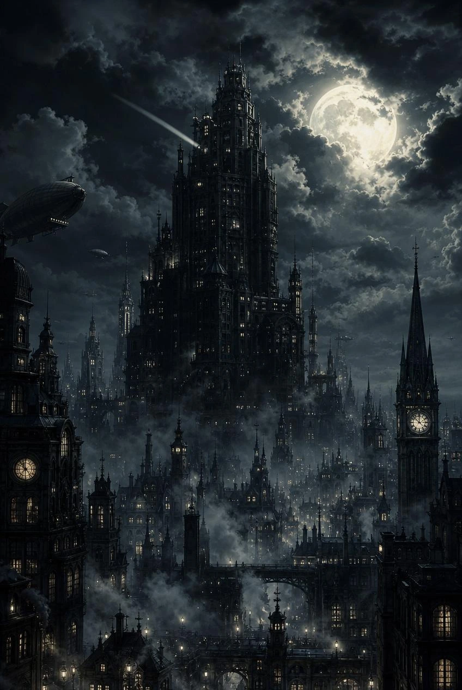

Dean Jordanov presents
An immortal. A city of steam & shadows. A debt come due.
▶ Listen to the PrequelThe Series
The Newport Maeve Chronicles is a gothic noir fantasy series set in Elyssar, a world where vampires, angels, and demonic forces exist alongside a society of steam and ruthless progress.
Now old, dark forces are seeking vengeance and a thin crack to crawl through. They have adapted to the modern world and its refining, and, no longer content with flesh alone, they thrive on the extended boundaries of sin and grief.
The more a society perfects itself, the more elaborate its sins and sorrows grow — and on that very refinement, they feed. The demonic, unseen, slowly consumes the city, threatening to break the Confederacy itself.
Unless someone does something… unless someone acts as a last-line contingency.

The Audiobook
The official prequel to the Newport Maeve Chronicles. Nine chapters. One immortal. A city that does not yet know what is coming.
Watch on YouTube →The Cast
Immortals and orphans. Angels and enforcers. In Newport Maeve, everyone is something other than what they appear.
Hover to reveal. More on the fandom wiki →
From the Prequel
“You presume the One True is asking.”
— The Entity, to Dion
“Because it is the pinnacle, your crowning monument to progress. The most technologically advanced city of your age. Where ambition walks hand in hand with hubris. And progress breeds corruption. Corruption blossoms into indulgence. And indulgence sharpens hunger into obsession, polishes desire until it gleams. The hellspawn, Dion… they do not feed on blood or flesh. They feed on that refinement, on cravings shaped by civilization itself.”
— The Entity, on Newport Maeve
“Listen, Protector. It will not happen. I have a strict protocol for who can be what in my society. If you find otherwise, you can seek me out again—and then we can have any kind of conversation you wish.”
— Dion, to the Protector
The World
Where the Zarina River meets the Moon Sea. The Confederacy's crown jewel and monument of its technological and logistic progress.
Newport Maeve — City Map
Follow the Chronicles
The story is growing. Follow production updates, explore the lore, and see the world take shape.